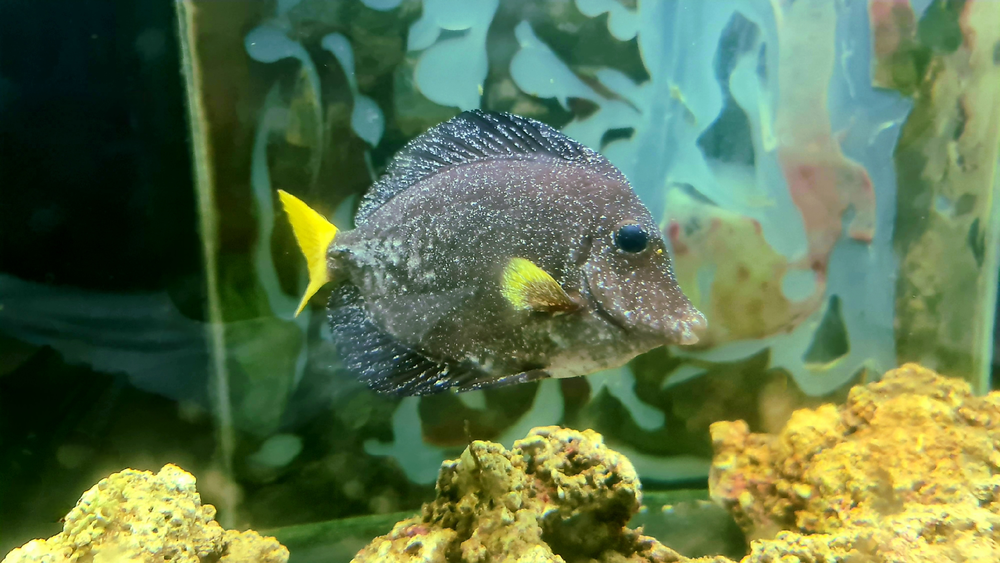
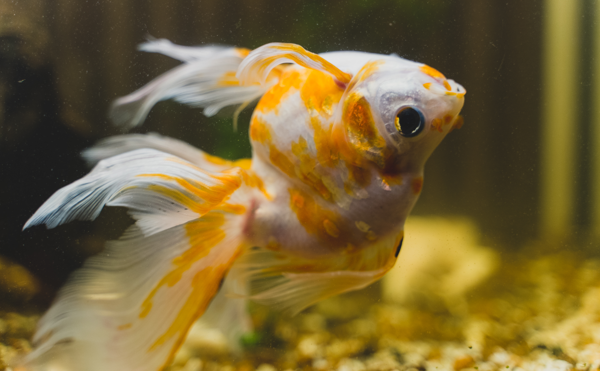
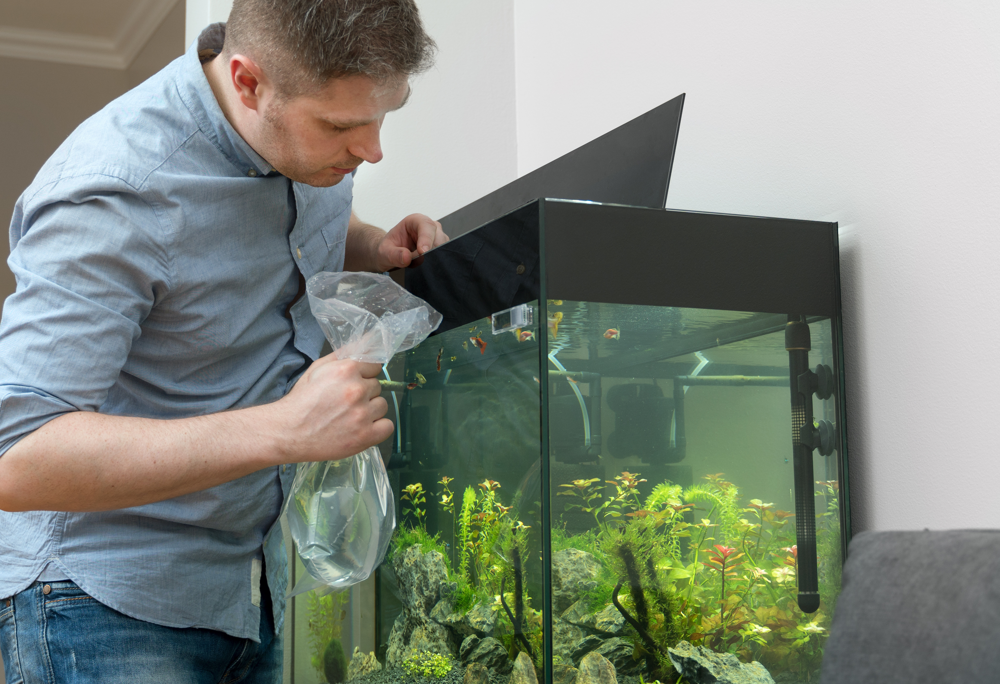
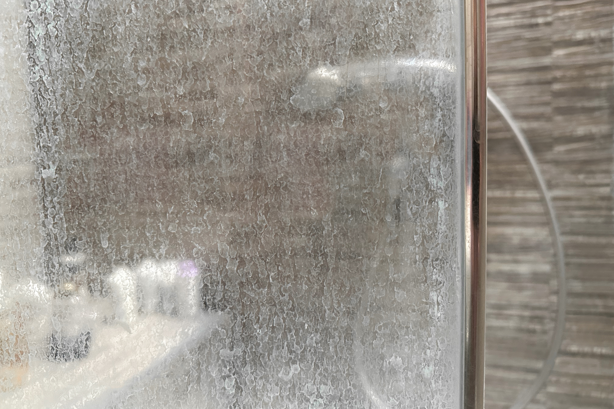

Common Problems With Your Fish and Fish Tank
On This Page
Fish Problems

Ich
Ich (Ichthyophthirius multifiliis) is one of the most common fresh water fish diseases. It is also one of the most treatable if caught early. Ich is a parasitic infection. It looks like tiny white dots on fish's body, fins, or gills. These are parasites that burrow into the fish's skin and cause irritation and stress. It becomes very lethal if not treated. Ich usually appears when fish are stress, which weakens their immune system. The common causes of fish stress is sudden temperature changes, poor water quality, overcrowding, and being brought into new aquariums. Introducing fish that have not been quarantined in a quarantine is an easy way to introduce ich. The best way to treat ich is to buy medication and follow the instructions the medication gives. This is one medication that can be used to treat ich Api Super Ick Cure

Nipped Fins
Nipped fins are physical damage caused by tank mates. The danger of nipped fins is it turning into fin rot (See fin rot bellow). Nipped fins look like clean tears or missing chunks from fins, sharp or uneven edges, damage that appears suddenly, and fish acting stress or avoiding certain areas.
Fish nipping is usually caused by:
- Fin nipping breeds - Like betta fish, some barbs species, some tetras species, some danios species, angelfish.
- Overcrowding
- Long finned fish in the wrong community
- Too few schooling fish kept together - Small groups of schooling fish can turn aggressive
- Lack of hiding spots
- One bully - One specific fish can be the problem. Sometimes one fish has a more aggressive temperament than the rest.

Fin Rot
Fin rot is usually a bacterial infection (sometimes fungal, however) that eats away at fish's fins and tail. It is usually due to something causing stress to the fish or something in the tank causing fin damage. If not treated, it will kill fish. Signs of fin rot are frayed or torn fins, fins that look like they are melting, black (maybe white or red also) edges on the fins, red streaks at the fin base, and lethargy in later stages. Early fin rot can look very subtle. It can appear like uneven or dull fin edges. Most of the environmental stress that causes fin rot is poor water quality, infrequent water changes, overcrowding, stress from bullying or incompatible fish, or fin nipping (See section above for fin nipping). The bacteria is already in the tank, it just becomes a problem when the fish immune system is weakened.
The best way to treat fin rot:
- Fix the water quality - make sure water parameters are good. Do 25% water changed for the first 1-2 days. Vacuum debris from substrate.
- Reduce stress - Separate any fin nippers or aggressive tank mates. Provide hiding spots for fish. Keep the tank temperature stable.
- Medication - if fixing water quality or stress do not improve fin rot, medication is the next step. This is one medicine that can help treat fin rot API MELAFIX

Dropsy
Dropsy is a very serious condition. It is a sign that something has gone wrong internally with a fish, Usually involving organ failure and fluid build up. Dropsy almost always has a poor prognosis. A fish with dropsy may have a severely bloated body, scales sticking out like a pinecone, bulging eyes, lethargy, and pale or redness near fins or belly. If pineconing is visible the condition is usually advances. Dropsy is usually from advances bacterial infection, liver damage, kidney failure, or long term stress. Dropsy is not contagious, but if bacteria caused it, the bacteria may be.

Swim Bladder Disease
Swim bladder disease is less of a disease and more of a buoyancy problem. The swim bladder is the fish's internal flotation device. When this has a problem the fish cannot stay level in the water. In many cases it is very treatable if caught early.
Common signs are:
- Floating at the surface of the tank
- Sinking to the bottom of the tank
- Trouble staying upright
- Swimming sideways, upside down, or tail-up/head-down
Common causes are overfeeding, constipation, sudden temperature changes, poor water quality, physical injury, or internal bacterial infection (less common but more serious). Goldfish and bettas are more likely to get swim bladder disease due to shape and diet.
How to treat swim bladder issues
- Fast the fish - no food for 24-48 hours
- After fasting adjust the diet - feed shelled peas (for omnivores like goldfish), frozen food, or soak dry pellets before feeding. Avoid floating foods if possible.
- Increase the temperature slightly - increase by 1–2°F to aid digestion
If constipation is the problem an epsom salt bath can be given. Put the fish in a separate container from tank. Fill the container with fish tank water, add 1 tablespoon of epsom salt per gallon, and soak the fish for 10-15 mins. This helps relax muscles and relieve blockages.
If diet corrections do not help or condition worsens, medication can be given. Medication is to target internal bacterial causes. This medication can help treat internal bacteria in fish Fritz Maracyn
Most mild cases take 1-3 days to correct. Moderate cases take up to a week. Chronic or infection related cases may not fully resolve due to lasting damage to the swim bladder.
Tank Problems

Cloudy Water
Cloudy tank water is usually from a bacteria bloom. This is very common, especially in new tanks. It is usually harmless to fish if handled right. Bacteria blooms happen when free floating bacteria multiple rapidly. This turns the water a milky white or gray. (Not green. See bellow for green water.) This happens commonly in tanks still cycling, newly set up tanks, tanks with recently increased bioload (new fish, overfeeding), a tank deep cleaning, or after medication use.
How to confirm it is a bacteria bloom:
- Water is cloudy white/gray, not green
- No strong odor
- Fish are acting normal
- Appears suddenly
If fish are gasping or the water smells this is a water quality issue and you need to act fast. Test your water parameters.
If it is a bacteria bloom:
- Leave it alone (important)
- Test ammonia, nitrite, and nitrate - only intervene if water parameters are off.
- Feed fish very light
- Make sure filter is running properly
- Add extra aeration to the tank
It usually lasts 2-7 days. On brand new tanks it may last up to 2 weeks.

Green Water
Sudden green water is usually caused by an algae bloom. Algae blooms are when algae multiples at a rapid rate.
The signs are:
- Water looks green, cloudy, or tinted
- Glass and decorations have a green film
- Plants get hairy or stringy algae
- Algae is growing faster than you can clean
It is usually causes by excessive light, nutrients, or both. Algae blooms are not uncommon when a tank is cycling, as well. If the tank lights are on for longer than 8-10 hours a day an algae bloom can occur. Direct sunlight on the tank can also trigger algae. Over feeding fish, fish waste accumulation, decaying plants, and uneaten food lead to excesses nutrients for algae to feed on.
How to fix an algae bloom:
- Adjust lighting: Reduce lighting to 6-8 hours a day. Position the tank to spot that does not get direct sunlight.
- Reduce nutrients: Feed fish only what they can eat in 2-3 minutes. Remove decaying plants and debris. Change water often.
- Manually clean the tank: Scrape algae from class and decorations. Remove excess algae from plants. Siphon the substrate to help clean the tank.
- Biological helpers (optional): Snails, shrimp, and algae eating fish like pleco can help keep tanks clean. For more information on shrimp and snail care click here. Learn more about plecos here.
If treated correctly algae blooms usually tank 1-2 weeks to clear up.

New Tank Syndrome
New tank syndrome happens when a newly set up tank has not developed enough beneficial bacteria to handle fish waste. This causes dangerous spikes of ammonia and/or nitrite. The lack of beneficial bacteria do not allow for the nitrogen cycle to happen. The nitrogen cycle is crucial. Fish waste breaks down into ammonia. Bacteria should convert ammonia to nitrite. Another bacteria converts it to nitrate. Without needed bacteria the ammonia and nitrite build up. It happens very quickly. This is deadly to fish.
Symptoms are:
- Fish gasping at the surface
- Red or inflamed fish gills
- Lethargic fish
- Clamped fins
- Sudden death- often more than one fish in the tank
How to fix new tank syndrome:
- Test you water immediately. Ammonia and nitrite should always be 0ppm in a cycled tank.
- Do small, frequent water changes. If ammonia or nitrite is present change 25% of tank water daily. This dilutes the toxins while bacteria establishes
- Reduce feeding. Feed every other day if needed. This helps reduce fish waste which leads to ammonia.
- Add beneficial bacteria. Use products like API Quick Start
- Increase aeration in the tank. Add an airstone to help fish breath. High ammonia and nitrite stress fish's gills.
- Be patient. Cycling tanks 3-6 weeks naturally. Once you see 0 ammonia, 0 nitrite, and some nitrate your tank is cycled.
What NOT to do:
- Do not replace filter media completely.
- Do not deep clean everything.
- Do not add more fish.
- Do not over feed.
These will reset the tank's cycle.

White Cloudy Water and Film After Water Change
White film along the waterline, glass, around filters, on heaters, cloudy water, and water decoration is usually calcium build up from hard water. If all of these disappear within 24 hours, its mineral precipitation. This is not harmful. Hard water contains high GH(general hardness) and alkalinity/KH(carbonate hardness). When new water enter fish tanks, it contains dissolved calcium and magnesium. If the water is slightly warm or aerated, minerals can temporarily turn cloudy. As the water settles, calcium can leave a white residue. If this happens, make sure to test your water to confirm your parameters are still normal. Occasionally using distilled water can help ensure that too many minerals do not build up in the tank. If your tank's water hardness levels like PH(normal levels 6.5-7.5 dKH) and alkaline/KH(normal levels 4–8 dKH) is too high, products like PH down can bring hardness levels down.